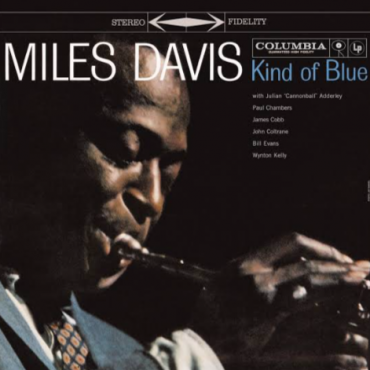
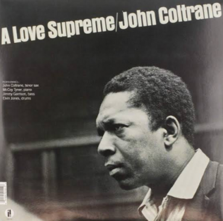
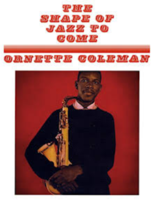

Listado de discos
Por: Axel Ricardo Ruiz Vigo
1. "Kind of Blue" - Miles Davis
Ficha del Disco

A muchos podrá gustarle o no pero en todos los sentidos, este disco fue un parteaguas,
un antes y un después en toda la historia del jazz. Proveniente de la mente maestra de Miles Davis,
considerado como el más grande innovador del jazz de todos los tiempos, siendo pionero de muchas de las
corrientes más importantes como el BeBop, Cool Jazz, Jazz Modal y Jazz Fusion.
2. A LOVE SUPREME - John Coltrane
Ficha del Disco

¿Hasta que punto puede enaltecer el arte a un ser humano? ¿Hasta qué punto puede transformar la mente, el alma,
el espíritu de una persona? Es difícil asegurar si su obra corresponde a un estado de consciencia musical
más allá de lo que podemos comprender o fue resultado de una locura inevitable en su búsqueda como lo fue claramente
su sonido de vanguardia extremo en -Ascension-.
3. THE SHAPE OF JAZZ TO COME - Ornette Coleman
Ficha del Disco

La segregación racial entre los años cincuenta y sesenta en los EE.UU. supuso una gran desigualdad social entre blancos y negros,
si bien tenían los mismos derechos, la calidad claramente no era la misma, no existía una real libertad y los afroamericanos
poco a poco se dieron cuenta de que ni en su propia música eran completamente libres, eso dió origen al Free Jazz,
movimiento musical que rompe con todas las formas armónicas y melódicas antes conocidas, música para desahogar las injusticias,
música en la cual dé debe conocer el contexto en que fue creada para poder entenderla.